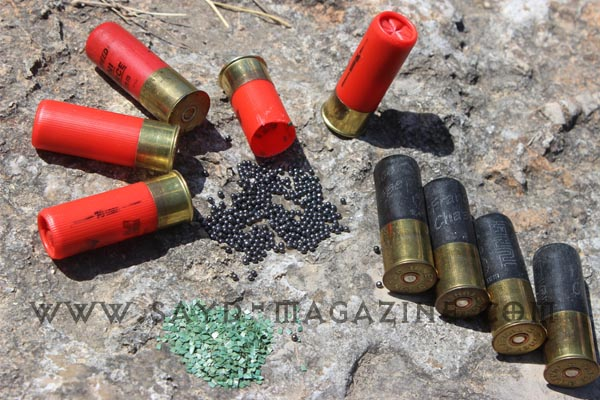
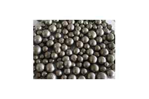
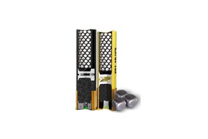
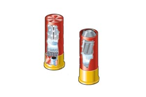

يوجد نوعان من خرطوش الصيد بمختلف العيارت. هنا سنتكلم عن نوعين لعيار 12ملم تقسم كما يلي : خرطوش صيد الطيور والحيوانات الصغيرة كالارنب و خرطوش صيد الحيوانات الكبيرة كالغزال والخنزير. خرطوش صيد الطيور والحيوانات الصغيرة كالارنب
يحتوي على رصاص بشكل كرات (خردق، رش، حلبي) بمختلف الاحجام والاوزان، بالنسبة لحجم الكرات فتقاس بالارقام من صفر الى عشرة وهم الاشهر (ممكن وجود احجام 11 و12)، وتكون الارقام عكسية فكلما كبر الرقم صغر حجم الكرات والعكس صحيح. واما بالنسبة للاوزان فهي مختلفة من 24 غرام وصولا الى اكثر من 60 غرام وذلك بحسب طول" الفراغة" المقاس بالميليمتر. والجدير بالذكر ان كل طول له البندقية المخصصة له (مغنوم، سوبر مغنوم) وتفاس في أمريكا بالانش وفي أوروبا بالميليمتر. في بعض البلدان هناك كرات معدنية وممكن ان تكون بشكل مربع مثل (Winchester Blind Side) وعادة يستخدم هذا النوع على البحيرات للحفاظ على البيئة لان الحديد يتحلل. Winchester Blind Side
قد نجد بعض اللغط بموضوع الضغط للخرطوش فيسما ضغط 70 مثلا ولكن رقم الـ70 الموجود على الخرطوش هو طول "الفراغة" مفتوحة بالميليمتر اما الضغط فيقاس بالبار. خرطوش صيد الحيوانات الكبيرة كالغزال والخنزير
هناك نوعان من خرطوش صيد الحيوانات الكبيرة : الاول ويسمى خرطوش" غلل" (buckshot) وهو عبارة عن كرات كبيرة من مادة الرصاص واشهرها تسعة كرات و 12 كرة لخرطوش الـ 70ملم والـ 67ملم ، و18 كرة لخرطوش الـ 76ملم (Magnum) والنوع الثاني هو ما يعرف بالنبلة (فراش، شفر) (Slug) وهو عبارة عن رصاصه واحدة، ويوجد منها نوعان (Sabot Slug و Rifled Slug) وسنتطرق بموضوع اخر عن هذان النوعان. لا بد من ذكر ان هناك انواع كثيرة من خرطوش الـ 12 ملم والذي يستخدم في معظم الاحيان للاستعمالات العسكرية متل (Flechette, Frag, Bean Bag ...) اعداد هاني الأحمد صور النص عن الانترنت